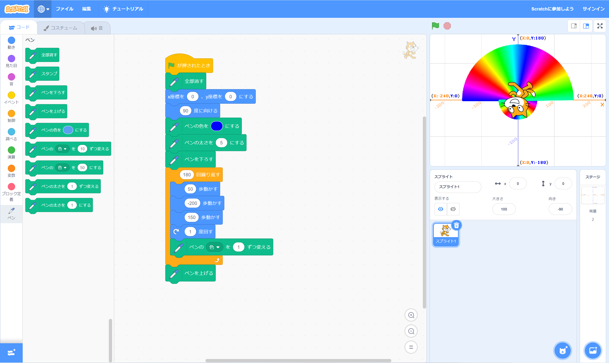

1週目のレポート ： 公大高専１年実習I-1
4組25番 meme
第1週目
1-1 サイエンスアート

1.内容
スクラッチを使って線や円を書くプログラムを書いた。
2.感想
○○度曲がって○○歩進むを○○回繰り返すという動作は人間が行ったら時間と労力がかかるうえに正確性が低い。しかし、コンピュータが行うとデータ上だが正確に早く行えるため、 実際に物事を行う前に検証できる。そして、異常があれば実際に起こる前に改善できるため安全性において非常に優れていると感じた。
1-2 ゲーム
1.内容
スクラッチを使用して猫がリンゴをキャッチするゲームを作った。
2.感想
こんなに単純なゲームでも複数のプログラムが必要だと知り驚いた。普段私が触れているゲームもこのような形ではないかもしれないが複雑なプログラミングで作られていると理解した。
1-3 ホームページ作成
私のホームページ
1.内容
ホームページの作成と編集を行った。
2.感想
題名を変えるだけなのに非常に細かい作業が必要だと理解した。普段ホームページを作っている人の苦労が少しだけわかった気がした。